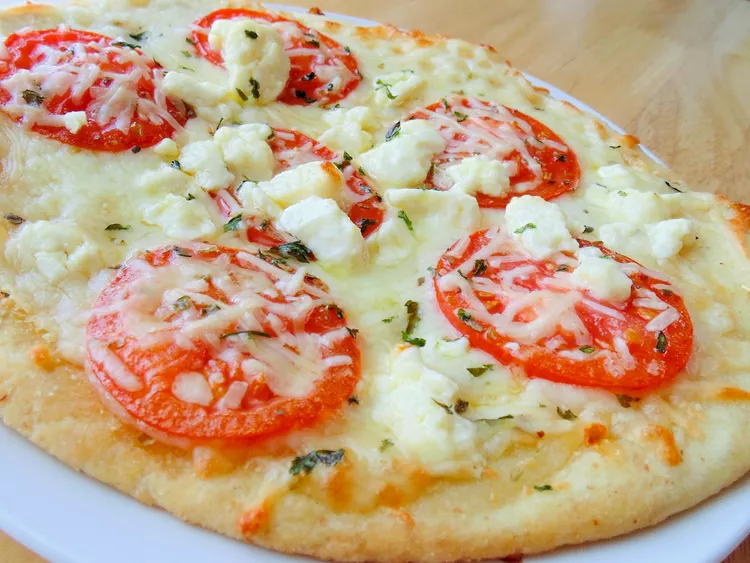

Back to HomePage...
Pizza

Description
This easy pizza recipe doesn't require much thought
early in the morning and the pizza taste great!
Ingredients
- ¼ cup olive oil
- 1 tablespoon minced garlic
- ½ teaspoon sea salt
- 8 Roma tomatoes, sliced
- 2 (12 inch) pre-baked pizza crusts
- 8 ounces shredded Mozzarella cheese
- 4 ounces shredded Fontina cheese
- 10 fresh basil leaves, washed, dried
- ½ cup freshly grated Parmesan cheese
- ½ cup crumbled feta cheese
Steps
- Stir together olive oil, garlic, and salt; toss with tomatoes, and allow to stand for 15 minutes. Preheat oven to 400 degrees F (200 degrees C).
- Brush each pizza crust with some of the tomato marinade. Sprinkle the pizzas evenly with Mozzarella and Fontina cheeses. Arrange tomatoes overtop, then sprinkle with shredded basil, Parmesan, and feta cheese.
- Bake in preheated oven until the cheese is bubbly and golden brown, about 10 minutes.